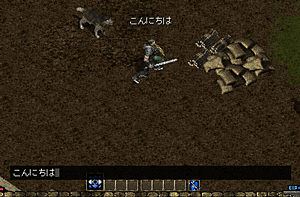
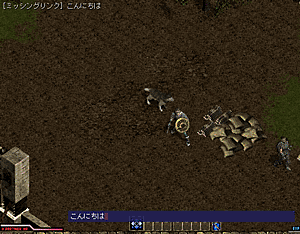
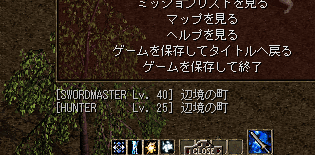
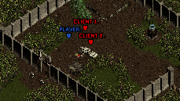

- オンラインモードに関する説明 -
・目次・
・チャットの方法・
オンラインモードではゲームに参加している
プレイヤー同士でチャットをすることができます。
チャットの方法には以下の二種類の方法があります。
| 通常チャット |
|  |
| キーボードのエンターキーを押すと チャットウィンドウ（黒いウィンドウ）が開きます。 ここに文字を入力して、もう一度エンターキーを押すと メッセージを送信することが出来ます。 メッセージはプレイヤーの頭上に表示されるので、 近くに居る人以外には見られません。 |
| 共通チャット |
|  |
|
キーボードのシフトキーを押しながらエンターキーを押すと |
チャットの内容は全てログファイルに保存されます。
シャドウフレアをインストールしたフォルダの中の「Log」フォルダに
"[年][月][日].log"というフォーマットのファイル名で保存されます。
・参加しているプレイヤーの情報を見る・
|  |
| オンラインモードでのゲーム中にゲーム設定メニューを開くと、 ゲームに参加しているプレイヤーの プレイヤー名、レベル、居場所を見ることが出来ます。 |
・各プレイヤーの詳細な位置を見る・
|  |
| オンラインモードでのゲーム中にマップ画面を開くと、 ゲームに参加しているプレイヤーのマップ上での居場所が表示されます。 ただし、全く別のエリアにいるプレイヤーは表示されません。 プレイヤーの表記名は、 ゲーム設定メニューを開いたときに表示されるプレイヤー情報の 上から順に、 "HOST", "CLIENT1", "CLIENT2", "CLIENT3" となります。 ただし、自プレイヤーは "PLAYER" と表示されます。 |